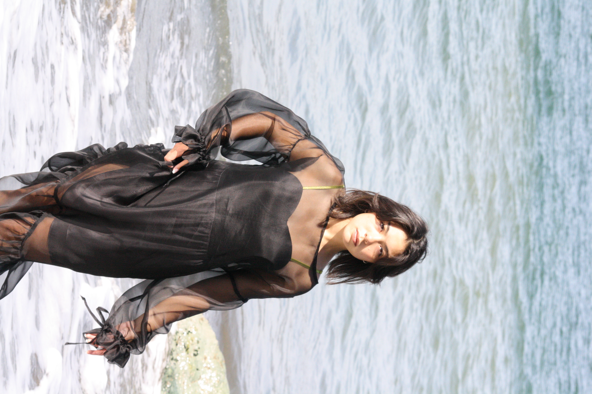
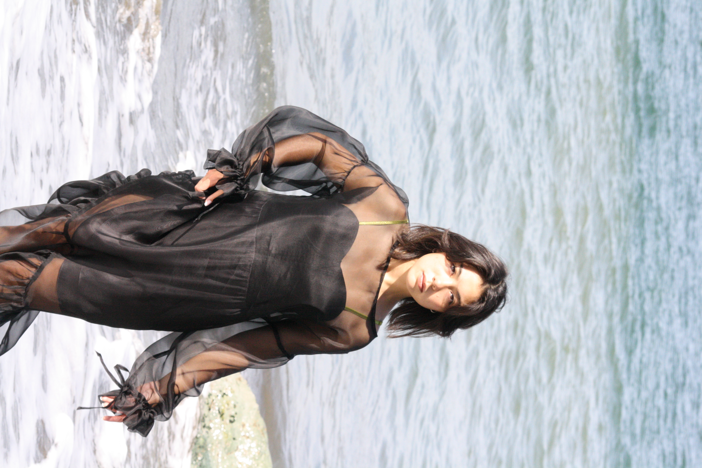
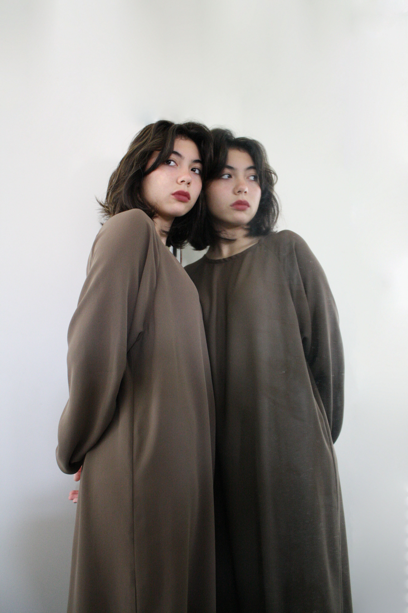
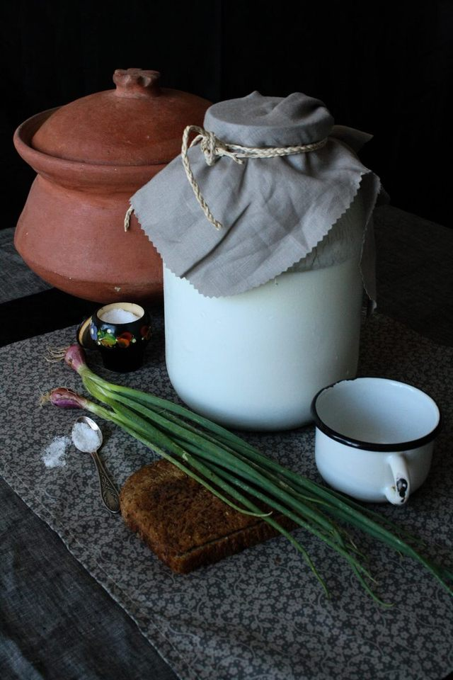
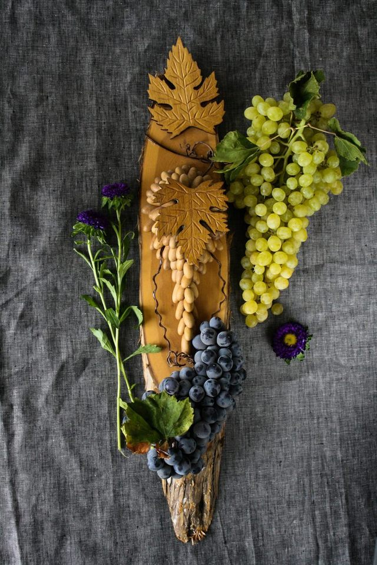

Somewhere In Eden
Photograph, 2022
This photo shoot was inspired by Grecian aesthetics for the clothing brand Matilda Matriarch based in San Francisco, CA.

 

Reflection
Photograph, 2022
Photo of Zoya Bacani. This picture features the models reflection. The minimal background partnered with muted colors reflects the mysterious aesthetic of the picture.

Heritage
Photograph, 2018
These photographs are an ode to Katya's Ukrainian heritage. They represent the simple and slow-paced lifestyle that people live in Ukraine.

